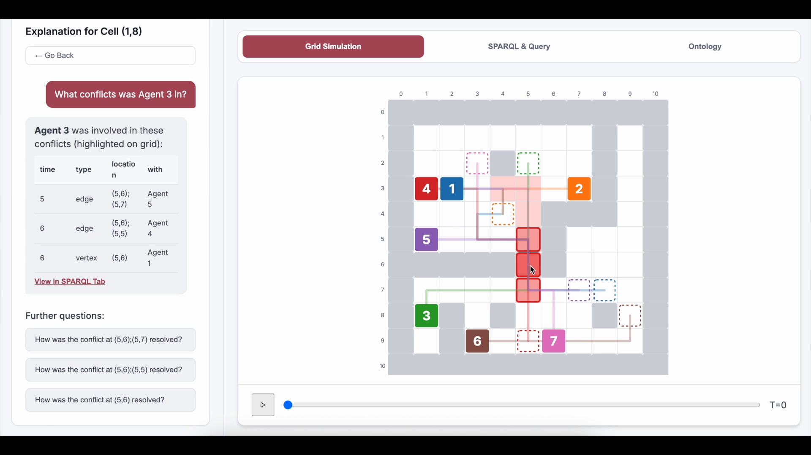
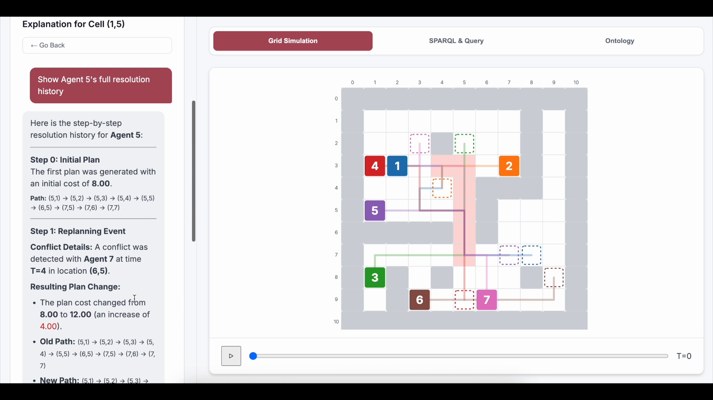
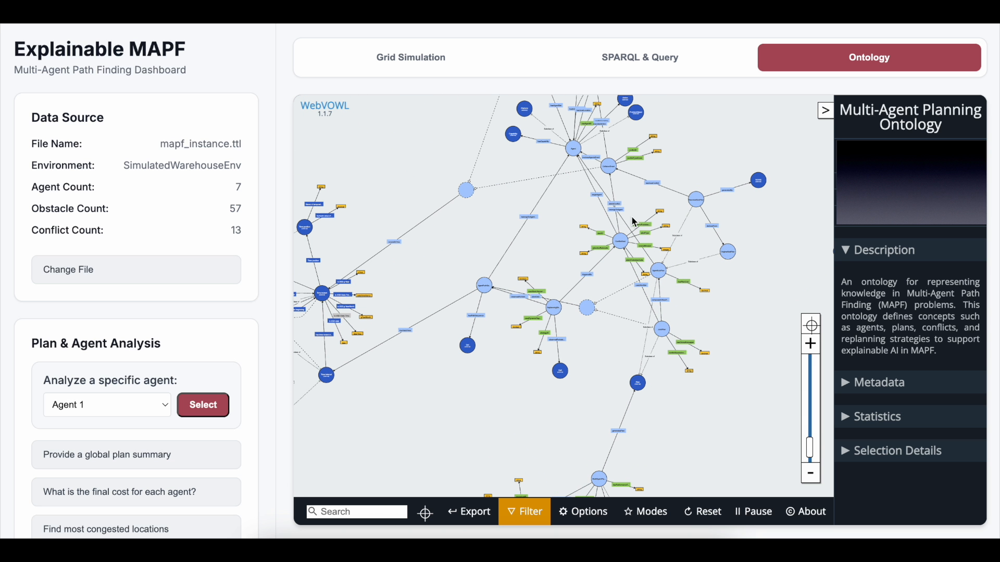

Explanation Interface
SPARQL Explanation Interface
The OMEGA interface [8] turns SPARQL results over maPO into visual and natural-language explanations grounded in the same knowledge graph.
Load a maPO RDF graph
The platform opens the generated knowledge graph and reconstructs the run from ontology instances rather than planner-specific viewers.
Inspect collision, alert, and plan context
The operator can inspect the grid, the conflict location, the affected agents, and the revised subplan from one graph-backed view.
From SPARQL to explanation text
Query results are rendered as explanation templates, so each answer stays grounded in explicit ontology entities and relations.
Q: Why did Agent-3 reroute?
A: The revised subplan resolves a recorded conflict and points back to the alert, strategy, and original plan through provenance links.
Demo video snapshots
Watch demo

Conflict cell highlighted in red
Replay agent trajectories
Same graph drives query and answer

Generate NL explanations
The explanation panel turns graph-grounded query results into natural-language answers about conflicts, agents, and plan revision.

Inspect ontology evidence directly
The same run can be explored as an ontology graph, making conflicts, alerts, plans, and strategies first-class entities.
Figure 6. Demo snapshots show replay, conflict inspection, and ontology evidence from the same maPO graph.
maPO · AAAI 2026 MAKE
11 / 15